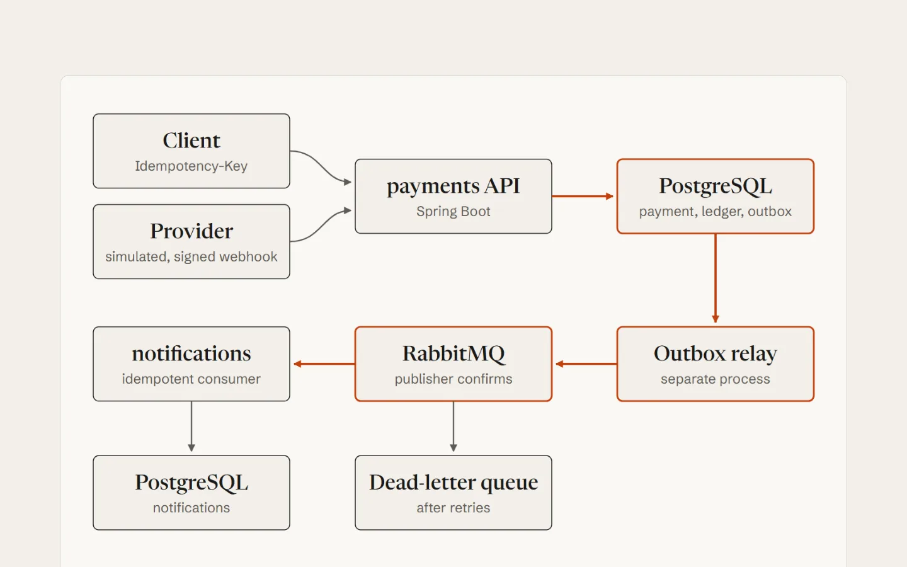
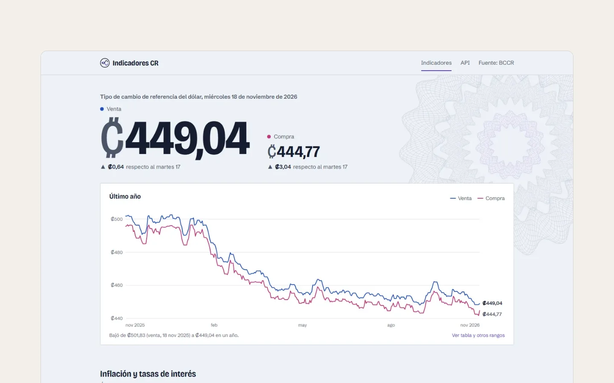

Frander Centeno
Full stack developer
I build web apps and data dashboards for small businesses and public institutions.
- Now
- Systems Engineering graduate (UNA, 2025). Lately: microservices with Spring Boot and automated QA with Cypress. Costa Rica, UTC-6.
- Looking for
- Full stack, back-end or QA roles, and freelance projects.
- Before
- Internship at ASADA Gamalotal (2025) and a university project for the Municipality of Nicoya (2024–2025).
Selected work
-

PuraReserva
Tour booking for Guanacaste, with an AI assistant.
WebFull stack developerNext.js, SupabasePersonal
-

Payments service with microservices
Idempotent payments and a double-entry ledger, in two services.
Back-endBack-end developerJava 21, Spring BootPersonal
-

Maritime Zone system, Nicoya
Citizen portal and admin dashboard for a municipal department.
WebFull stack developerNext.js, MariaDBUniversity
-

Costa Rica economic indicators pipeline
Daily Central Bank indicators, with a public API and a dashboard.
DataFull stack and data engineerPython, NestJSPersonal
-

ASADA inventory system
Inventory system for a rural water association.
WebFull stack developerNext.js, SupabaseInternship
More projects
-
Tourism arrivals dashboard
International arrivals from public ICT data. The demo may take ~30 s to wake up.
-
QA suite for this portfolio
E2E and API tests that run against this live site.
Stack
Frontend
React, Next.js, TypeScript, Tailwind
Backend
NestJS, Supabase, PostgreSQL, REST
Data
Python, pandas, DuckDB, Streamlit, Plotly
Quality
Playwright, Vitest, GitHub Actions
Experience and education
Jul 2025 – Dec 2025
ASADA Gamalotal
Professional internship.
2024 – 2025
Municipalidad de Nicoya
University project for the Maritime Zone department.
2025
Systems Engineering, Universidad Nacional
Certifications
DataCamp: AI Engineer for Developers, Data Engineer, Data Analyst, Python Developer, SQL Associate. Scrum Fundamentals Certified. PM4R Professional (IDB).
Languages
Spanish, native. English, B1.
About me
I plan before I write code, and I test on a real phone before I call a feature done. I am looking for a full stack role where I can keep building and learning.
Contact
- Emailcentenofrander@gmail.com
- LinkedInfrander-centeno
- GitHubFrandercc1234